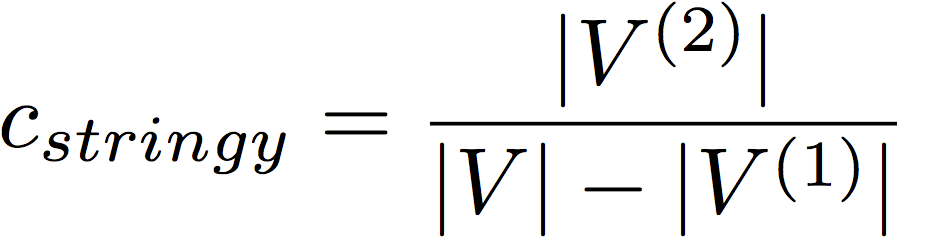
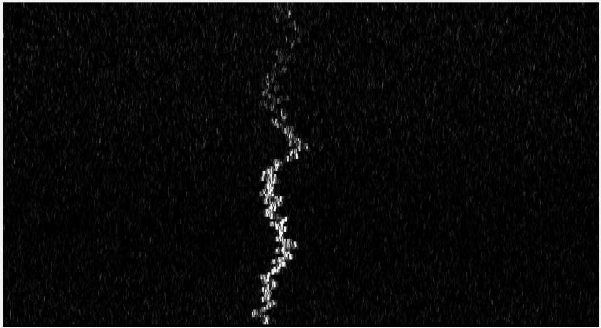
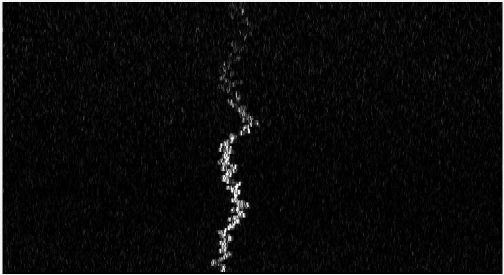
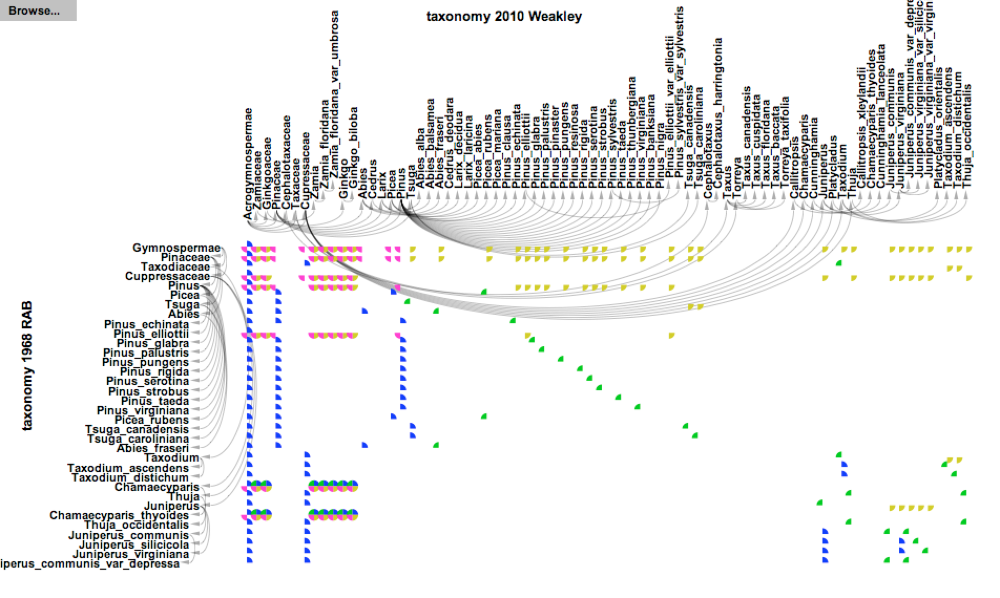
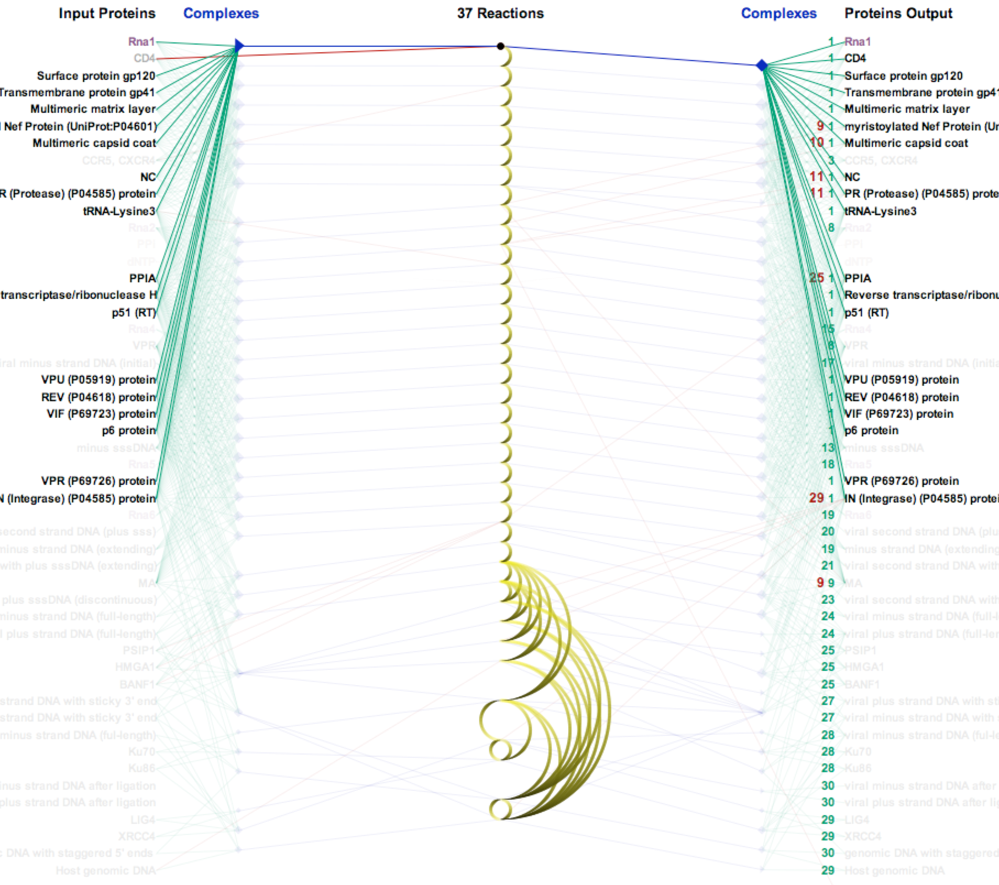
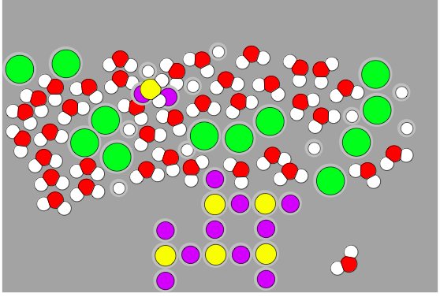
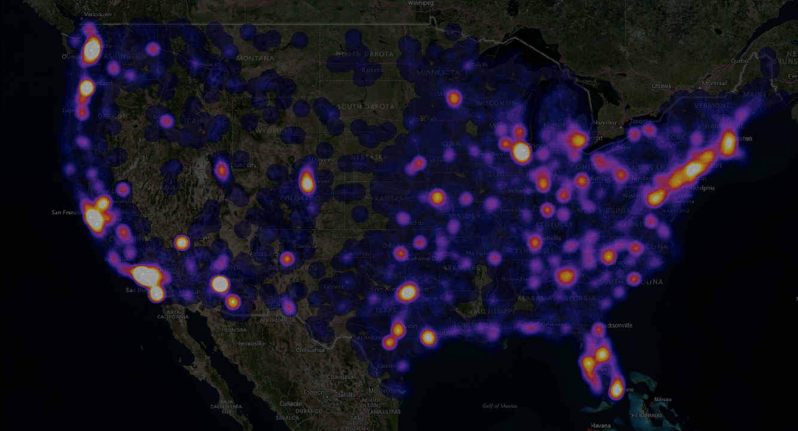
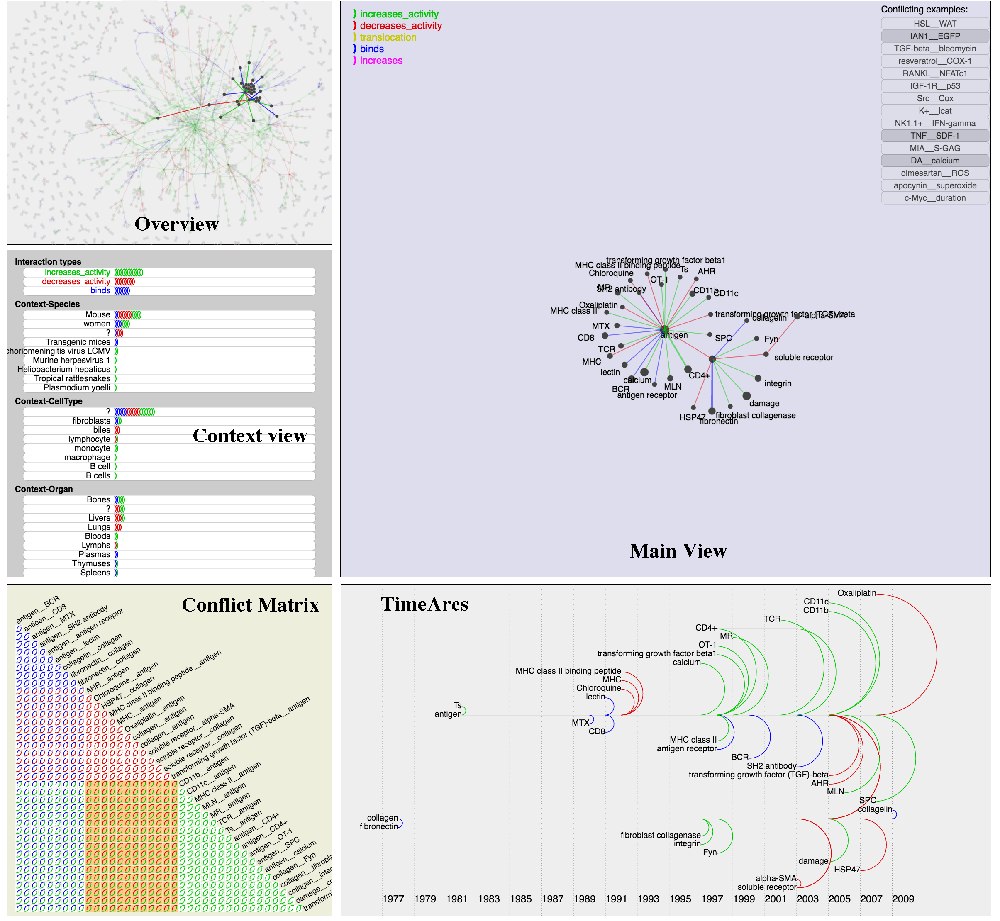

Visualizing relationships in massive and dynamic data
Tommy Dang
Assistant Professor
Department of Computer Science
Texas Tech University
Outline
- Visual Patterns for 2D scatterplots:
- Time Series data (TVCG 2012)
- High-dimensional data (PacificVis 2014)
- Images (ISVC 2014)
- Network visualizations:
- Protein interaction networks (BioVis 2015, VOILA 2015)
- Dynamic networks (EuroVis 2016)
Scatterplot

Visual features

Scagnostics are computed on on three geometric graphs

A Stringy shape is a skinny shape with no branches
Computing Convex: The ratio of the area of the alpha hull and the convex hull

Example: Stringy Scagnostics
TimeSeer demo
The US Employment data comprise monthly employment rates of various economy factors for 50 states over 22 years from 1990 to 2011.
The data are retrieved from Bureau of Labor StatisticsOutline
- Visual Patterns for 2D scatterplots:
- Time Series data (TVCG 2012)
- High-dimensional data (PacificVis 2014)
- Images (ISVC 2014)
- Network visualizations:
- Protein interaction networks (BioVis 2015, VOILA 2015)
- Dynamic networks (EuroVis 2016)
Our approach
Schematic overview
Leader algorithm
Input: n scatterplots and a threshold r
- We initialize the leader list L= Ø
- For each scatterplot Si, we find the nearest leader in L (dist(Si,L)≤ r)
- If we find a nearest leader, we add Si to the follower list of the nearest leader
- Otherwise, we make Si a new leader and add Si into L
The complexity is roughly O(n)
J. Hartigan. Clustering Algorithms. John Wiley & Sons, New York, 1975
Example 1: Gas Sensor data set 128 variables (8128 scatterplots), 3600 observations
Example 2: Madelon data set 500 variables (124,750 scatterplots), 1042 observations
Example 3: Breast cancer dataset
Outline
- Visual Patterns for 2D scatterplots:
- Time Series data (TVCG 2012)
- High-dimensional data (PacificVis 2014)
- Images (ISVC 2014)
- Network visualizations:
- Protein interaction networks (BioVis 2015, VOILA 2015)
- Dynamic networks (EuroVis 2016)
Images analysis


Testing dataset: Wang

Testing dataset: ZuBuD

Comparison of different Image Retrieval systems

Demo on SETI plots
Examples of SETI Waterfall Plots

 
More information on Waterfall_plot: http://setiquest.org/wiki/index.php/

More information on Waterfall_plot: http://setiquest.org/wiki/index.php/
Outline
- Visual Patterns for 2D scatterplots:
- Time Series data (TVCG 2012)
- High-dimensional data (PacificVis 2014)
- Images (ISVC 2014)
- Network visualizations:
- Protein interaction networks (BioVis 2015, VOILA 2015)
- Dynamic networks (EuroVis 2016)
Pathway Matrix (BioVis 2015)

Provenance Matrix (VOILA 2015)
Reaction Flow (BioVis 2015)
Networks and structures

User study of Tree layouts

Visualizing dynamic networks
 TimeArcs github repository: https://github.com/CreativeCodingLab/TimeArcs
TimeArcs github repository: https://github.com/CreativeCodingLab/TimeArcs
Questions?
Email: Tommy.Dang@ttu.edu
  This work was supported by NSF/DHS grant DMS-FODAVA-0808860 and DARPA Big Mechanism Program under ARO contract WF911NF-14-1-0395
This work was supported by NSF/DHS grant DMS-FODAVA-0808860 and DARPA Big Mechanism Program under ARO contract WF911NF-14-1-0395
BioLinker
